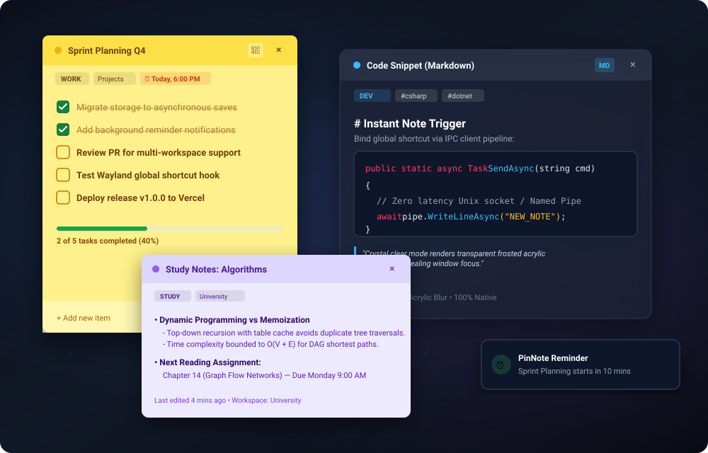
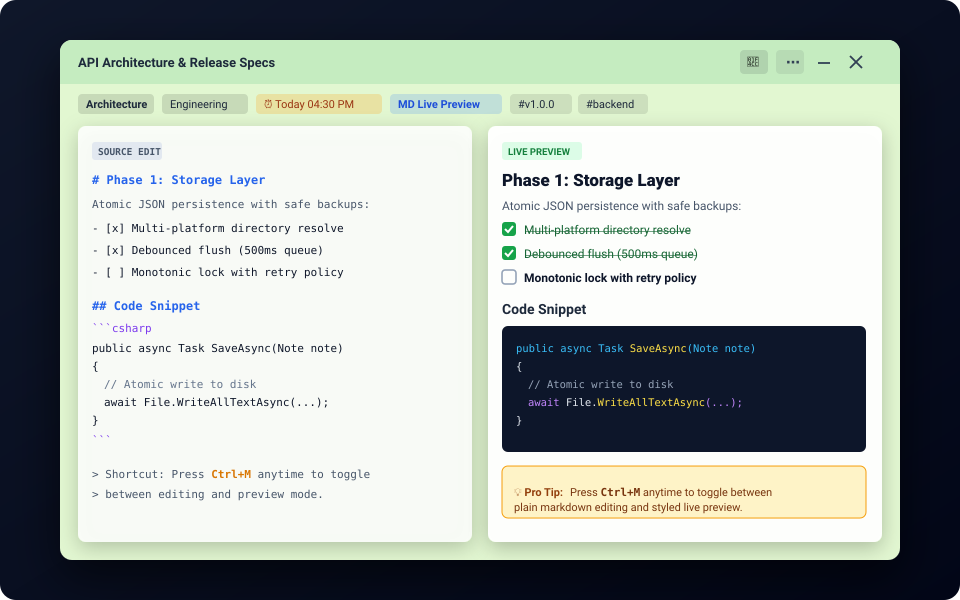
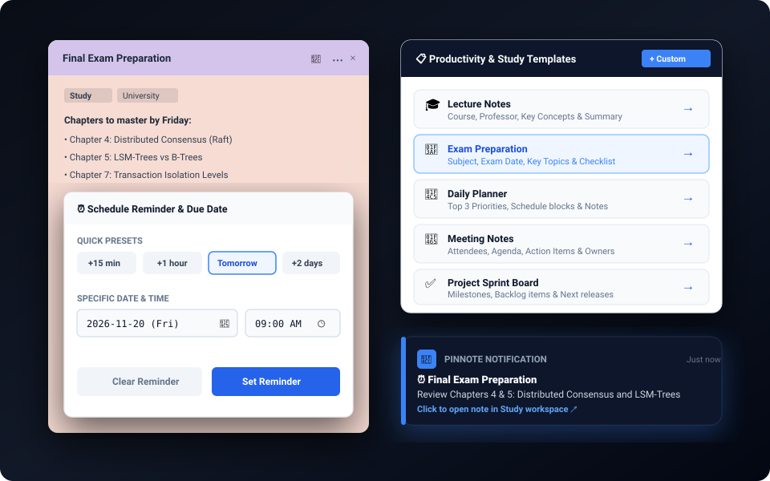

The fast, distraction-free desktop workspace for thinkers, students, and developers. Capture thoughts, format in Markdown, organize interactive checklists, and float crystal-clear notes on Windows and Linux.

See how PinNote replaces cluttered sticky note apps with a refined, keyboard-driven native experience.



PinNote is built from the ground up for zero latency, keyboard fluidity, and complete privacy.
No Electron. No Chromium runtime. Built directly with .NET 8, Avalonia UI for Linux and WPF for Windows. Starts in under 200ms and idles at <30MB RAM.
Switch effortlessly between freeform text, interactive checklists with Enter/Backspace workflows, and formatted Markdown preview (Ctrl+M).
Keep your university research, work sprints, and personal tasks segregated with dedicated Workspaces. Filter dynamically by color, category, or custom tags.
Set quick preset reminders (+15m, +1h, tomorrow morning) or schedule precise due dates. Receive native desktop notifications via Windows Toast or Linux notify-send.
Pin notes on top of your code editor, documentation, or video call with see-through transparency. Choose between vibrant sticky note colors or subtle frosted acrylic.
Your data is stored in human-readable JSON files in your local application directory. Automatic schema migration with safety backups guarantees your notes are never lost.
Eliminate visual clutter. Organize your sticky notes into isolated workspaces that you can show, hide, or filter in one click.
Lecture notes, exam study schedules, paper references, and thesis milestones.
Sprint backlog, API endpoints, pull request checklists, and architecture diagrams.
Daily planner, grocery list, books to read, workout logs, and travel itineraries.
Built for speed, offline reliability, and keyboard ergonomics without subscription walls.
| Feature | PinNote v1.0.0 | Windows Sticky Notes | Notion / OneNote | Electron Sticky Apps |
|---|---|---|---|---|
| Memory Footprint | <30 MB RAM | ~80–120 MB | ~300–800 MB | ~200–500 MB |
| Startup Latency | <200 ms | ~1–2 sec | ~3–8 sec | ~2–5 sec |
| Cross-Platform | Windows & Linux | Windows only | Web / Desktop | Varies |
| Markdown Mode (Ctrl+M) | Yes (Edit & Preview) | No | Partial | Varies |
| Interactive Checklists | Yes (Enter/Backspace) | No | Yes | Partial |
| Workspaces & Tags | Yes (Unlimited) | No | Yes | No |
| Reminders & Due Dates | Yes (Native Alerts) | No | Yes | Rarely |
| 100% Offline & Private | Yes (Local JSON) | Syncs to MS Account | Cloud required | Varies |
| Crystal-Clear Transparency | Yes (Glass & Acrylic) | No | No | Rarely |
| License & Cost | 100% Free & Open (MIT) | Bundled OS | Freemium / Paid | Often Paid |
PinNote is designed to stay out of your way. Navigate and capture thoughts at the speed of thought.
Spawn a new note instantly from any app, IDE, or game.
Create a new sticky note inside the active workspace.
Pin or unpin the current note so it floats above all windows.
Switch seamlessly between plain markdown edit and rendered preview.
Transform plain text into an interactive checklist with checkboxes.
Focus the search bar on the dashboard and filter notes in real-time.
Clone the current note including colors, tags, and formatting.
Dismiss popups, clear search queries, or minimize dashboard to tray.
Free, open-source, and self-contained. No external runtime or .NET installation required.
Ultra-responsive WPF native application with system tray integration, Windows Toast notifications, and automatic startup support.
Hardware-accelerated Avalonia UI desktop application. Native support for GNOME, KDE Plasma, XFCE, Sway, and Wayland.
curl -sSL https://raw.githubusercontent.com/Tauhid3K/PinNote/master/scripts/install-linux.sh | bash
No! PinNote is 100% offline and requires zero account creation or cloud login. All your notes, workspaces, and templates are stored locally on your hard drive in human-readable JSON files.
No. PinNote is distributed as a self-contained application for both Windows and Linux. The .NET 8 runtime is pre-bundled into the single executable so it runs immediately out of the box with zero prerequisites.
Pressing Ctrl+M toggles Markdown mode. You can write headings (# H1, ## H2), bullet lists, bold text, code blocks, and blockquotes. Pressing the Mode button switches smoothly between source editing and beautiful rendered preview.
On Windows, notes are saved in %APPDATA%\PinNote\notes.json.
On Linux, notes are saved in ~/.config/PinNote/notes.json.
Whenever you import or replace notes, PinNote automatically generates timestamped safety backups.
Wayland intentionally restricts background applications from capturing global keystrokes for security. PinNote includes a built-in CLI command (pinnote --new-note) that you can bind to Ctrl+Alt+N or your favorite shortcut in your desktop environment's Keyboard Settings (GNOME, KDE, or Sway).
Yes! PinNote's export packages (.json) are 100% cross-platform compatible. You can export all notes and workspaces from Windows and import them seamlessly into Linux, or vice versa, with automatic merge or safe replace options.